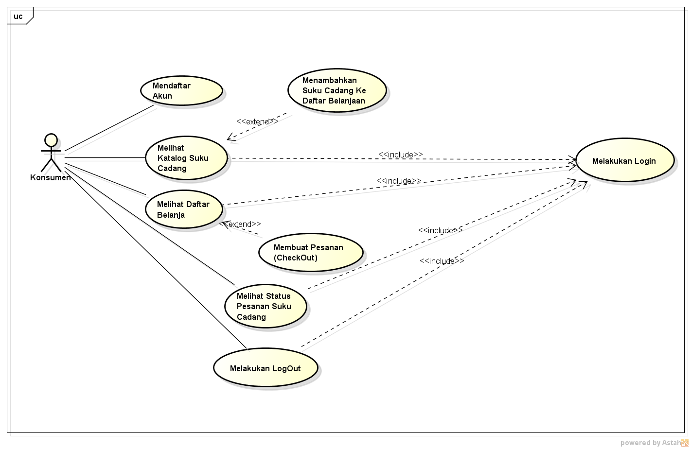

NIM : 1811500114
Nama : Maman Abdurahman
Kelompok : TI6A
Hasil saya menyadur dipertemuan 4:
1.Absensi dan penilaian nilai dihitung dari kita buat link dan file pertemuan yang kita rangkum.
2.Nama file ditulis angka sesuai pertemuan ke berapa /index.html dibelakangnya.
3.Penjelasan Mengenai Use Diagram Dan Deskripsi Usecase yaitu untuk menggambarkan atau hubungan apa yang bisa dilakukan aktor ke sistem.
4.Aktornya biasanya 1 atau lebih dan gambar aktor yang digunakan dalam Usecase Diagram adalah stickman, terus aktor itu siapa? Aktor adalah
siapa yang menggunakan sistem seperti pengguna/user.
5.Aktor sendiri terbagi menjadi 2 yaitu aktor aktif dan aktor pasif. Aktor Aktif digambarkan di usecase diagram harus di sebelah kiri sedangkan aktor pasif digambarkan di use case diagram harus disebelah kanan.
6.Usecase Diagram tidak menjelaskan secara detail tentang penggunaan usecase, namun hanyamemberi gambaran singkat hubungan antara usecase, aktor, dan sistem.
7.Biasanya di USeCase Diagram Terdapat Include dan extend, include (wajib) adalah suatu penghubung usecase lain yang membutuhkan include ini untuk syarat dapat menjalankannya,
sedangkan extend (pendukung) adalah usecase yang dapat berdiri sendiri meski tanpa usecase lainnya.
8.penjelasan lebih mendalam mengenai include dan extend dengan beberapa contoh yang telah disediakan oleh dosen.
9.setiap usecase diagram dilengkapi oleh skenario usecase, skenario usecase terdiri dari skenario normal dan skenario alternatif. Skenario normal yaitu sistem berjalan tanpa mengalami masalah,
sedangkan skenario alternatif adalah bila suatu sistem mengalami masalah.
10.Membuat Usecase Diagram kita masih menggunakan software Astah Comunity.
11.Merangkum terlebih dahulu cara membuat skenario usecase diagram di ms word dan ada baiknya sebelum mengetik kita membuat gambar tampilan halaman yang dibutuhkan dengan tujuan untuk mempermudah kita dalam mengisi deskripsi.
12.Membuat deskripsi pada aplikasi MS.Word Dan menyimpannya digithub dengan menyertakan link download yang kita sediakan.

Download file latihan astah disini
Download file Deskripsi Use Diagram disini